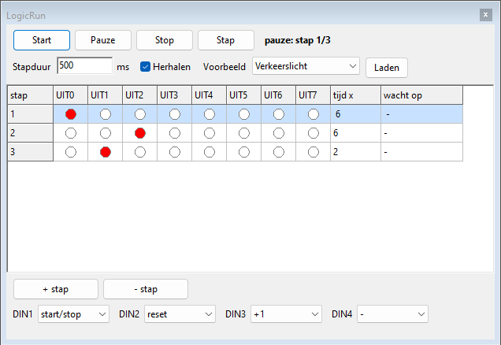
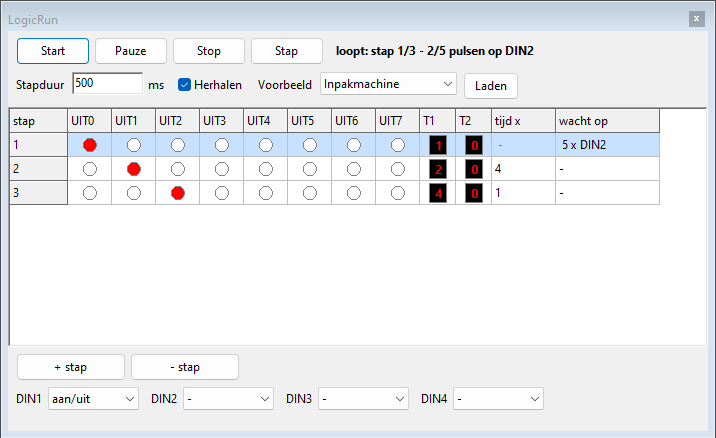
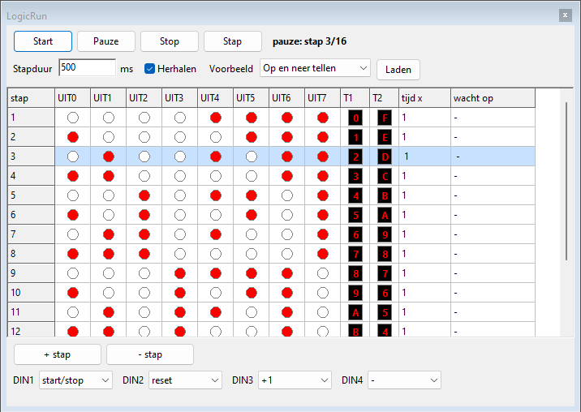

LogicRun: programmeren in stappenLogicRun: programmeren in stappen
LogicRun: programmeren in stappenLogicRun: programmeren in stappenLogicRun is een blok dat je niet bedraadt maar programmeert. Je schrijft een reeks stappen; elke stap zet een aantal uitgangen aan. Zo maak je een verkeerslicht, een looplicht of een teller zonder één poort te gebruiken.

Je verbindt het blok met gewone draden: schakelaars en sensoren naar de ingangen, de uitgangen naar lampen, relais, een zoemer of de ingangen van andere onderdelen.
LogicRun. Het
LogicRun-venster gaat open naast Logic.Er kan maar één LogicRun-blok op een paneel staan. Dubbelklik op het blok, of kies Programma bewerken... in het rechtsklikmenu, om het venster te openen. Via het rechtsklikmenu kan je het blok ook vergrendelen of verwijderen.

| Knop of vak | Wat doet het? |
|---|---|
| Start | Het programma loopt, stap na stap. |
| Pauze | Het programma blijft staan op de huidige stap; de uitgangen blijven zoals ze zijn. |
| Stop | Het programma stopt en gaat terug naar het begin; alle uitgangen gaan uit. |
| Stap | Eén stap verder, handig om je programma stap voor stap te controleren. |
| Stapduur | Hoe lang één tijdseenheid duurt, in milliseconden (500 ms = een halve seconde). |
| Herhalen | Aan: na de laatste stap begint het programma opnieuw. Uit: het stopt bij de laatste stap. |
| Voorbeeld en Laden | Een kant-en-klaar programma laden: kies het in de lijst en klik op Laden. Bij het openen van het venster staat de lijst op — kies — (zie Voorbeelden). |
| + stap en - stap | Een stap toevoegen na de gekozen stap, of de gekozen stap verwijderen. |
| DIN1 tot DIN4 | Wat elke ingang doet. |
| wacht op | Klik in deze kolom om een stap te laten wachten op een ingang of op een aantal pulsen (zie Wachten). |
| T1 en T2 | Het cijfer dat T1 en T2 in die stap op een display tonen. Klik erop om een cijfer van 0 tot F te kiezen; LogicRun zet dan zelf de 4 uitgangen (zie Displays). |
Bovenaan zie je of het programma loopt en bij welke stap het is. De huidige stap is in de tabel lichtblauw.
Een programma heeft hoogstens 64 stappen.
Een stap duurt normaal tijd x keer de stapduur. In de kolom wacht op kan je een stap in plaats daarvan laten wachten. Klik in die kolom en kies:
| Keuze | De stap duurt tot ... | Bijvoorbeeld |
|---|---|---|
| Geen | de tijd om is (zoals gewoonlijk) | een verkeerslicht |
| Tot ingang aan | de gekozen ingang aan is | een eindschakelaar: het wagentje rijdt tot hij aan de muur komt |
| Tot ingang uit | de gekozen ingang uit is | wachten tot iemand een knop loslaat |
| Tot aantal pulsen op ingang | er zoveel pulsen op de ingang geweest zijn | dozen tellen: na 5 dozen stopt de band |

Een stap die wacht, heeft geen tijd: in de kolom tijd x staat dan een streepje. Bovenaan in het venster en onderaan het blok zie je waarop de stap wacht en hoeveel pulsen er al geteld zijn.
Onder UIT7 heeft het blok twee extra aansluitingen voor een display, net zoals de uitgang van een teller. Ze lezen de uitgangen als een binair getal:
| Aansluiting | Leest | Toont |
|---|---|---|
| T1 | UIT0 tot UIT3 (UIT0 = 1, UIT1 = 2, UIT2 = 4, UIT3 = 8) | 0 tot 9 en A tot F |
| T2 | UIT4 tot UIT7 (UIT4 = 1, UIT5 = 2, UIT6 = 4, UIT7 = 8) | 0 tot 9 en A tot F |

In het venster tonen de kolommen T1 en T2 het cijfer van elke stap. Klik op zo’n cijfer en kies een ander: LogicRun zet dan zelf de 4 uitgangen aan of uit. Naast elk cijfer in het menu zie je de 4 bits, bv. 5 = 0101. De gewone uitgangen blijven werken: je kan dus tegelijk lampjes en een display aansturen.

Zet twee displays naast elkaar, T2 links en T1 rechts, dan krijg je een getal van twee cijfers (van 00 tot FF).
De meeste functies reageren op het moment dat de ingang aan gaat: gebruik daarvoor een drukknop. Voor een schakelaar is er de functie aan/uit.
| Functie | Wat gebeurt er als de ingang aan gaat? |
|---|---|
| start/stop | Staat het programma stil, dan start het; loopt het, dan pauzeert het. |
| reset | Het programma gaat naar de eerste stap. |
| +1 | Het programma gaat één stap verder. |
| aan/uit | Het programma loopt zolang de ingang aan is. Gaat hij uit, dan stopt het en gaan alle uitgangen uit (handig met een schakelaar). |
| - | Niets: de ingang wordt niet gebruikt. |
| Voorbeeld | Uitgangen |
|---|---|
| Verkeerslicht | UIT0 rood, UIT1 oranje, UIT2 groen. |
| Looplicht | UIT0 tot UIT7 gaan één voor één aan. |
| Motor links/rechts | UIT0 motor links, UIT1 motor rechts, met een korte stop ertussen. Verbind ze met L en R van een motor. |
| 4-bitteller | UIT0 tot UIT3 tellen binair van 0 tot 15 (UIT0 = 1, UIT1 = 2, UIT2 = 4, UIT3 = 8). |
| Wagentje | UIT0 vooruit tot DIN3 aan is (eindschakelaar), even stil, UIT1 achteruit tot DIN4 aan is; DIN1 aan/uit. Verbind UIT0 met R en UIT1 met L van een motor. |
| Inpakmachine | UIT0 lopende band tot er 5 pulsen op DIN2 geweest zijn (dozen), UIT1 inpakken (2 s), UIT2 zet een teller op nul; DIN1 aan/uit. |
| Op en neer tellen | T1 telt op van 0 tot F, T2 telt tegelijk af van F tot 0. Verbind T1 en T2 met een display. |
| Persoon heen en weer | UIT1 naar rechts tot DIN4 aan is (S2), 2 s stil, UIT0 naar links tot DIN3 aan is (S1), 2 s stil; DIN1 aan/uit. Hetzelfde programma als in les 16: verbind UIT0 met L en UIT1 met R van een persoon, S1 met DIN3 en S2 met DIN4. |
| Wagentje op parcours | UIT0 vooruit tot er 3 pulsen op DIN3 geweest zijn (paaltje 3), 2 s stil, vooruit tot DIN4 aan is (Finish), 2 s stil, UIT1 achteruit tot DIN2 aan is (Start); DIN1 aan/uit. Hetzelfde programma als in les 17: verbind UIT0 met V en UIT1 met A van een wagentje, Start met DIN2, Tel met DIN3 en Finish met DIN4. |
Het programma wordt samen met het paneel bewaard in het paneelbestand (.lpl). Ook
ongedaan maken werkt voor wijzigingen in het programma. Een oudere versie van
Logic slaat het LogicRun-blok over.
Probeer het zelf in les 12: Programmeren met LogicRun.